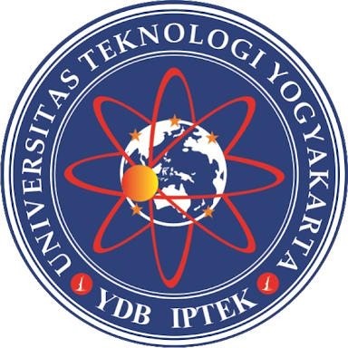

KEGIATAN AKADEMIK UTY
|
|
Semester Ganjil TA. 2018/2019
|
Semester Genap TA. 2018/2019
|
Semester Antara TA 2018/2019
|
Visi UTY
"Universitas yang Unggul dalam Teknologi dan Karakter serta Berwawasan Global pada Tahun 2024 di Wilayah Indonesia"
|
Misi UTY
- Menyelenggarakan pendidikan terbaik di bidang ilmu pegetahuan dan tekologi menghasilkan
lulusan yang unggul dalma teknologi dna karakter serta berwawasan global sehinga dapat
memberikan kontribusi terbaik bagi bangsa dan mempunyai daya saing yang tinggi.
-
Menyelenggarakan penelitian dan pengembangan ilmu pengetahuan dan teknologi yang unggul
dalam teknologi dan karakter serta berwawasan global untuk menegakkan kemajuan dalam
disiplin akademik dan profesional.
-
Menyelenggarakan pengabdian kepada masyarakat dalam bentuk pemanfaatan ilmu pengetahuan dan
teknologi untuk meningkatkan kesejahteraan hidup masyarakat.
-
Menjalin kerjasama dengan masyakarat, institusi dan lembaga pemerintah maupun swasta untuk
mengningkatkan mutu kegiatan tridarma perguruan tinggi.
|